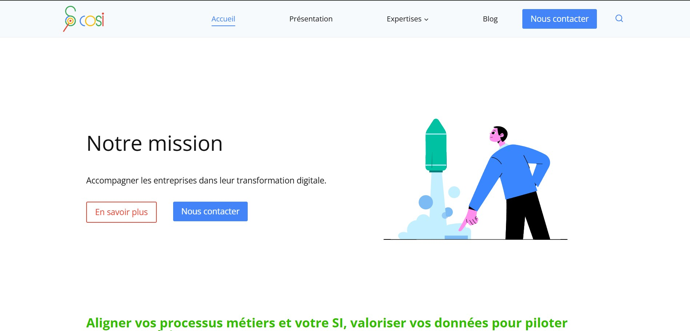

Site institutionnel - COSI Nord
Ce projet est un site institutionnel pour la société COSI Nord. Ce site a été réalisé dans le cadre de mon stage de première année de BTS SIO option SLAM. Le site a pour objectif de donner de la visibilité à l'entreprise et d'attirer de nouveaux prospects.
Les fonctionnalités principales du site sont les suivantes :
- Formulaire de contact
- Lien vers les réseaux sociaux
- Blog
Le développement du site est réalisé avec le CMS WordPress pour gérer facilement le contenu du site. Au delà de l'utilisation du CMS, des ajouts de code personnalisé en JavaScript sont effectués pour personnaliser l'affichage du site selon les besoins exprimés.
Compétences mobilisées :
- Gérer le patrimoine informatique :
- Recenser et identifier les ressources numériques.
- Exploiter des référentiels, normes et standards adoptés par le prestataire informatique.
- Répondre aux incidents et aux demandes d'assistance et d'évolution :
- Traiter des demandes concernant les applications.
- Développer la présence en ligne de l'organisation :
- Participer à la valorisation de l’image de l’organisation sur les médias numériques en tenant compte du cadre juridique et des enjeux économiques.
- Travailler en mode projet :
- Analyser les objectifs et les modalités d'organisation d'un projet.
- Planifier les activités.
- Mettre à disposition des utilisateurs un service informatique :
- Déployer un service.
- Accompagner les utilisateurs dans la mise en place d'un service.
Ressource(s) associée(s) :